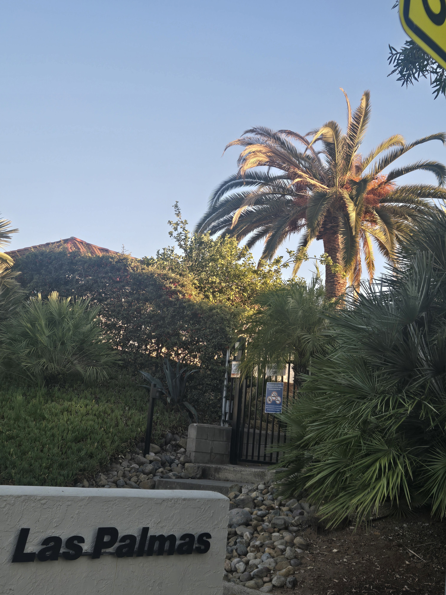
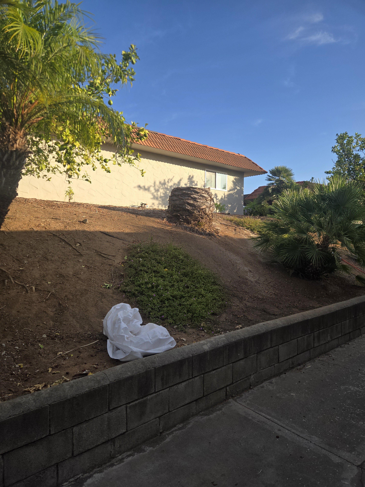

{kind=link}
{kind=link}
Look at the whole palm
I review the crown, trunk, base, nearby ground, access, and the timeline the owner reports.
Canary Island date palm risk
If a mature Canary Island date palm looks different, I will look at the whole palm, photograph the change, and explain whether I would monitor it, seek confirmation, or consider it urgent.
Owner-Led Palm Stewardship
Owner-led South American palm weevil prevention and licensed treatment for valuable mature palms, with assessments, recurring care, decline response, and qualified-contractor coordination.
California Pest Control Business License No. 47756California Qualified Applicator License No. 175295Category B — Landscape MaintenanceInsured
Treatment recommendations and applications remain subject to the pesticide label, applicable law, site conditions, and agreed scope.
Free field guide
This seven-page SDPP guide covers the local history, warning signs, preventive management program, treatment routes, monitoring, removal response, and questions to ask a provider.
Photographed in Old Escondido
These are adults I captured and photographed at my own property. The close-up shows the long snout, dark body, and legs clearly.


Read the dated capture record and watch the adult moving on a palm trunk
From crown decline to an empty place
South American palm weevil larvae feed inside a palm. Damage to the growing point can kill a Canary Island date palm, and an infestation can be missed until severe damage has occurred. UC IPM explains the damage and warning signs.
The photographs below show one documented palm at Las Palmas in Old Escondido: visible crown decline, a closer view, and the stump after removal. SAPW was suspected in this record; the photographs alone do not confirm the cause.



See the complete Las Palmas photo sequence · Explore the Palm Loss Record
A concern about your palm
Tell me your city, what changed, and any treatment history you know. I can look at the palm, document its condition, and explain the protection or response options that fit.
What I watch for
A drooping or thinning crown, unusual frond behavior, damage, odor, or debris may deserve attention. None of those signs alone proves South American palm weevil.
I review the crown, trunk, base, nearby ground, access, and the timeline the owner reports.
Dated views help show whether the palm is stable or continuing to decline.
I explain whether monitoring, protection, treatment, decline response, or contractor coordination fits what I find.
Prevention and treatment timing
Canary Island date palms may merit preventive protection before obvious crown collapse, especially where local pressure, palm value, nearby losses, or property responsibility justify an assessment. Treatment timing, product selection, and application must follow the label and site conditions.
See South American palm weevil treatment services · Read the local field chronology
Safety and certainty
Hidden decay, structural stability, pest confirmation, and treatment outcome may require different evidence or qualified specialists.
Keep people away from a visibly unstable or actively failing palm and contact the appropriate emergency or tree-risk professional when life safety may be involved.
Private inquiry
Tell me what you are seeing and what you need to decide. I work with homeowners protecting important mature palms.